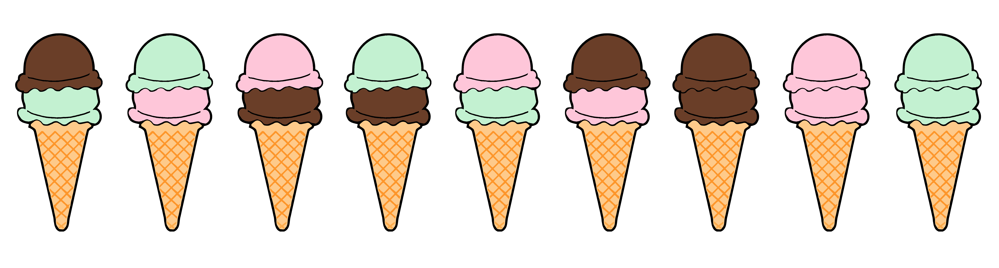
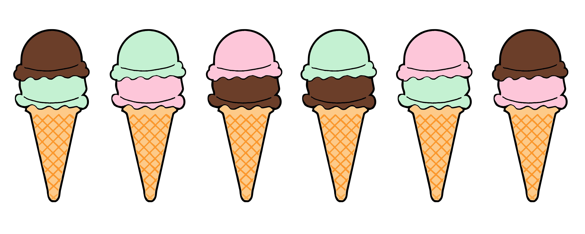
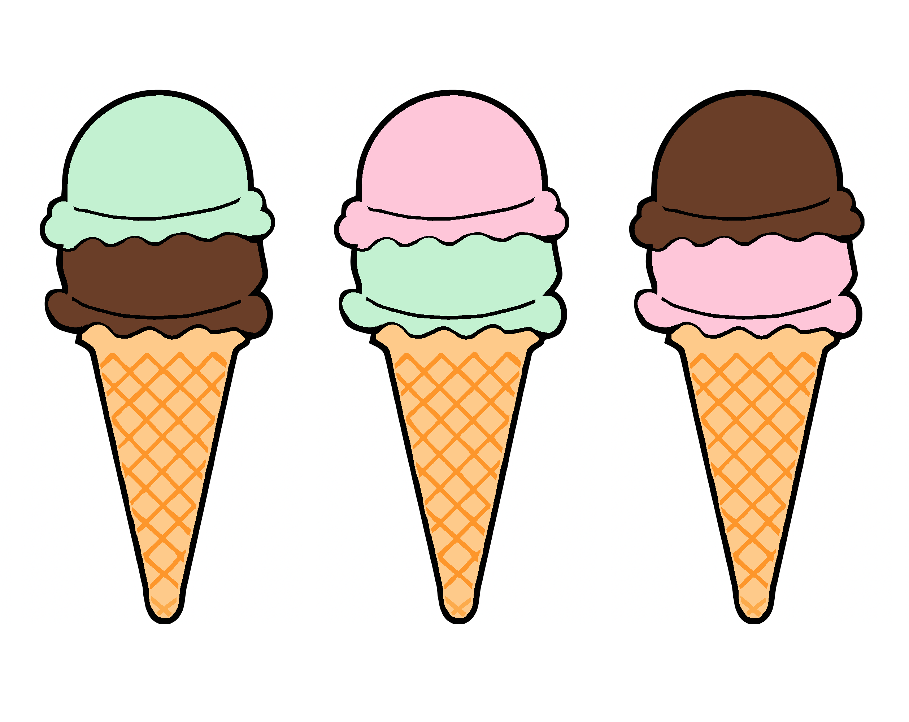
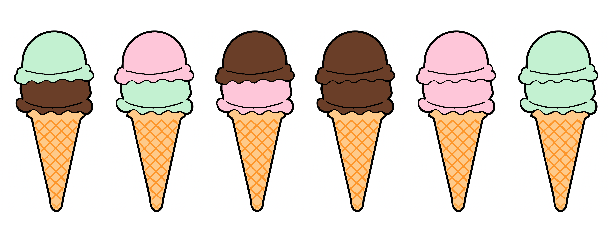

Understanding Combinations and Permutations

How many times did you face questions starting with “Suppose you have an urn with three red balls and five blue balls, …”? The answer for me is, not often since high-school, but recently they popped up again in data science interviews.
Despite countless classes in statistics, I still take a deep breath and hope I won’t embarrass myself too much. My main problem is that I get crazy confused with binary labels, especially if the label itself is not too intuitive.
Some non-intuitive (for me) binary labels include:
And last but not least, combinations and permutations.
So this blog post is an attempt to clarify once and for all the difference between the two and get some practice.
The Math
Permutations vs Combinations
The main difference between combinations and permutations is order. In particular:
- Permutations: order matters
- Combinations: order does not matter
What does it mean in practice?
One rule of thumb is to check whether the individual objects are identifiable. For example:
- Urn with blue and red balls: the individual ball is not identifiable, therefore we are talking about combinations
- Deck of cards: individual cards are identifiable, therefore it could be either way
Also, note that for any problem, the number of permutations is always weakly larger than the number of combinations. The intuition is simple: since in permutations order matters, AB and BA are two different outcomes, while with combinations they are grouped into a single one.
Example
For this section, we are going to use a simple example in which we have to order a two-scoops ice cream cone and there are three possible flavors: amarena, chocolate and pistacchio.
Permutations
Let’s start with permutations since they are mathematically simpler. We have seen that in combinations order matters. In our example, suppose we care about which flavor is on top on the ice cream. Now we are going to further distinguish between two cases:
- With replacement
- Without replacement
Where replacement means that after I draw an object, I can draw it again (e.g. I put it back in the pool).
Replacement
In the first case, we can order both scoops of the same flavor. Therefore, for each scoop (2) we have 3 options (the flavors).
The number of overall events is
$$ \text{from 3 permute 2, with replacement} = 3 * 3 = 3^2 = 9 $$
In general, the number of possible permutations of $n$ objects in $k$ draws with replacement is $n^k$.
No Replacement
Alternatively, we can only order different flavors in each scoop. In this case, for the first scoop we can pick any flavor, but for the second scoop we can only pick one of the two remaining flavors.
The number of overall events is
$$ \text{from 3 permute 2, without replacement} = 3 * 2 = \frac{3!}{(3-2)!} = \frac{3 * 2 * 1}{1} = 6 $$
where ! denotes the factorial operation which can be recursively defined as $n! = n \times (n-1)!$ with $0! = 1$.
In general, the number of possible permutations of $n$ objects in $k$ draws without replacement is $\frac{n!}{(n-k)!}$.
Combinations
Combinations are usually more common since in a lot of scenarios we do not care about the order or the identity of the objects. In our example, let’s assume we don’t care which flavor gets on top. As before, we are going to further distinguish between two cases:
- With replacement
- Without replacement
No Replacement
In this case, we cannot have two scoops of the same flavor. Therefore, for each scoop (2) we have 3 options (the flavors). However, the order of the flavors does not matter, i.e. we are indifferent between getting chocolate on top or on the bottom, as long as we get it.
The number of overall events therefore is the number of permutations of 3 flavors among 2 scoops, divided by the permutations of 2 out of 2 scoops.
$$ \text{from 3 choose 2, without replacement} = \frac{\text{from 3 permute 2, without replacement}}{\text{from 2 permute 2, without replacement}} = \frac{\frac{3!}{(3-2)!}}{\frac{2!}{(2-2)!}} = \frac{3!}{2!(3-2)!} = \frac{3 * 2 * 1}{2 * 1 * 1} = 3 $$
In general, we define the mathematical operation “from $n$ choose $k$” as
$$ \text{from n choose k} := {n \choose k} = \frac{n!}{k!(n-k)!} $$
Which corresponds to the number of possible combinations of $n$ objects in $k$ draws without replacement.
Replacement
Alternatively, we can be allowed to order the same flavor for both scoops.
In this case, the number of overall events is
$$ \text{from 3 choose 2, with replacement} = {3 + 2 - 1 \choose 2} = \frac{(3 + 2 - 1)!}{2!(3-1)!} = \frac{4 * 3 * 2 * 1}{2 * 1 * 2 * 1} = 6 $$
In general, the number of possible combinations of $n$ objects in $k$ draws with replacement is ${n + k - 1 \choose k}$.
Summary
We can summarize all the possible scenarios in a simple table.
| With Replacement | Without Replacement | |
|---|---|---|
| Permutations (order matters): | $n^k$ | $\frac{n!}{(n-k)!} $ |
| Combinations (order doesn’t matter): | $ {n + k - 1 \choose k} \text{=}\frac{(n+k-1)!}{(n-1)!k!} $ | $ {n \choose k} = \frac{n!}{(n-k)!k!} $ |
Where $n$ is the number of objects and $k$ is the number of draws.
Example
Let’s explore together a more complex example to see how we can apply permutations and combinations to compute probabilities.
There are four people in an elevator, four floors in the building, and each person exits at random. Find the probability that:
- all people exit at different floors
- all people exit at the same floor
- two get off at one floor and two get off at another
I use the factorial and comb functions from the math library.
from math import factorial, comb
Practical Advice
Before we start, some practical advice. What worked best for me is to approach the question in the following way:
- what are the overall events that we are considering?
- what are the positive events that we are considering?
And for both questions, I ask myself:
- does order matter?
- is there replacement?
Moreover, it is also very useful to restate the problem in terms of objects and draws. For example, in this case, I can restate the problem as: “I am drawing a floor for each person”. This makes it clear whether or not there is replacement, i.e. whether or not I can draw the same floor for different persons.
Question 1
What is the probability that they all get off at different floors?
Total events: (from floors 4 permute 4, with replacement)
Positive events: (from floors 4 permute 4, without replacement)
factorial(4) / 4**4
0.09375
Question 2
What is the probability that they all exit at the same floor?
Total events: (from 4 floors permute 4, with replacement)
Positive events: (from floors 4 choose 1)
4 / 4**4
0.015625
Question 3
What is the probability that two get off at one floor and two at another?
Total events: (from floors 4 permute 4, with replacement)
Positive events: (from 4 people choose 2, without replacement) * (from 4 floors choose 2, without replacement)
comb(4, 2) * comb(4, 2) / 4**4
0.140625
Practice Questions
Now it’s your time to shine! Here are some practice questions with solutions
Problem 1
Suppose that you randomly draw 4 cards from a deck of 52 cards. What is the probability of getting 2 spades and 2 clubs?
Total events: (from 52 cards choose 4, without replacement)
Positive events: (from 13 cards choose 2) * (from 13 cards choose 2)
comb(13, 2) * comb(13, 2) / comb(52, 4)
0.02247298919567827
Problem 2
Suppose you draw 5 cards without replacement from a standard deck of 52 playing cards. What is the probability of guessing all 5 cards in any order?
Total events: (from 52 cards choose 5, without replacement)
Positive events: 1
1 / comb(52, 5)
3.8476929233231754e-07
Problem 3
Suppose you draw 3 cards without replacement from a standard deck of 52 playing cards. What is the probability of guessing all 3 cards in the correct order?
Total events: (from 52 cards permute 3, without replacement)
Positive events: 1
1 / (factorial(52) / factorial(3))
7.43879958514289e-68
Problem 4
Suppose you draw 5 cards without replacement from a standard deck of 52 playing cards. What is the probability of guessing 3 of them (out of 3 guesses), in any order?
Total events: (from 52 cards permute 3, without replacement)
Positive events: (from 5 cards permute 3, without replacement)
(factorial(5) / factorial(3)) / (factorial(52) / factorial(5))
2.9755198340571564e-65
Problem 5
A 4 digit PIN is selected. What is the probability that there are no repeated digits?
Total events: (from 10 permute 4, with replacement)
Positive events: (from 10 permute 4, without replacement)
(factorial(10) / factorial(6)) / 10**4
0.504
Problem 6
In a certain state’s lottery, 48 balls numbered 1 through 48 are placed in a machine and 6 of them are drawn at random. If the 6 numbers drawn match the numbers that a player had chosen, the player wins 1,000,000. In this lottery, the order the numbers are drawn in doesn’t matter. Compute the probability that you win the million-dollar prize if you purchase a single lottery ticket.
Total events: (from 48 choose 6, without replacement)
Positive events: 1
1 / comb(48, 6)
8.148955075788542e-08
Problem 7
In a certain state’s lottery, 48 balls numbered 1 through 48 are placed in a machine and 6 of them are drawn at random. If five of the six numbers drawn match the numbers that a player has chosen, the player wins a second prize of 1,000. Compute the probability that you win the second prize if you purchase a single lottery ticket.
Total events: (from 48 choose 6, without replacement)
Positive events: (from 6 choose 5, without replacement)
comb(6, 5) / comb(48, 5)
3.504050682589073e-06
Problem 8
Compute the probability of randomly drawing five cards from a deck and getting exactly one Ace.
Total events: (from 52 choose 5, without replacement)
Positive events: (from 4 aces choose 1) * (from 48 cards that are not aces choose 4)
4 * comb(48, 4) / comb(52, 5)
0.2994736356080894
Problem 9
Compute the probability of randomly drawing five cards from a deck and getting exactly two Aces.
Total events: (from 52 choose 5, without replacement)
Positive events: (from 4 aces choose 2) * (from 48 cards that are not aces choose 3)
comb(4,2) * comb(48, 3) / comb(52, 5)
0.03992981808107859
Problem 10
Suppose you have 3 people in a room. What is the probability that there is at least one shared birthday?
Total events: (from 365 days permute 3, with replacement)
Negative events: (from 365 days permute 3, without replacement)
1 - (365 * 364 * 363) / (365**3)
0.008204165884781345
Problem 11
Given a class of 12 girls and 10 boys, what is the probability that a committee of five, chosen at random from the class, consists only of girls?
Total events: (from 22 choose 5, without replacement)
Positive events: (from 12 choose 5, without replacement)
comb(12, 5) / comb(22, 5)
0.03007518796992481
Conclusion
Permutation and combination questions are a classic in data science questions (unfortunately).
Code
You can find the original Jupyter Notebook here:
https://github.com/matteocourthoud/Blog-Posts/blob/main/combperm.ipynb
I hold a PhD in economics from the University of Zurich. Now I work at the intersection of economics, data science and statistics. I regularly write about causal inference on Medium.